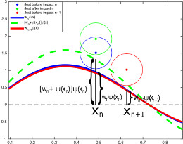

I am interested in modeling and analyzing various real
world phenomena. Some of the topics I have worked on are: Hydrodynamic
Quantum Analogs, Logical circuit dynamics, Chaotic
scattering, Cancer modeling, and Particle Accelerator
Physics. To find out more about my current research
please refer to my research statement.
Cancer Drug Response:
 According
to the National Cancer Institute, almost 40% of men and women in the
United States end up developing cancer in their lifetime, and total
national expenditure on cancer is $125 Billion. While cancer
deaths have fallen, the treatment of cancer is still predominant a trial
and error process. This may result in delays to administer the
correct treatment, the use of more invasive procedures, or an increase
in toxicity due to superfluous treatments. Although these
procedures may end up saving the patient, the treatment may also have an
adverse effect on their quality of life. To remedy this cruel
paradox my collaborators and I have been developing a framework of
complete scientific investigations for optimal treatment through the use
of robust mathematical models and biological experiments rooted in the
rigors of physics.
According
to the National Cancer Institute, almost 40% of men and women in the
United States end up developing cancer in their lifetime, and total
national expenditure on cancer is $125 Billion. While cancer
deaths have fallen, the treatment of cancer is still predominant a trial
and error process. This may result in delays to administer the
correct treatment, the use of more invasive procedures, or an increase
in toxicity due to superfluous treatments. Although these
procedures may end up saving the patient, the treatment may also have an
adverse effect on their quality of life. To remedy this cruel
paradox my collaborators and I have been developing a framework of
complete scientific investigations for optimal treatment through the use
of robust mathematical models and biological experiments rooted in the
rigors of physics.
Once again, borrowing statistics from the National Cancer Institute, over 60% of 
 cancer
cases and over 70% of cancer related deaths occur in Africa,
Asia, and South America, having the worst effect on the poorest
populations. Some of the easiest cancers to treat in the Western
world, solid -- accessible tumors, are often fatal in poor
nations. In industrialized nations the answers to solid tumors is
simple -- operate. However, operation is generally quite complex,
and costs a significant amount of money. This can be remedied by
the use of drug injections into solid tumors, which is cheap and does
not require much skill. We have developed mechanistic models for
the fluidic interactions of the drug with the geometry and topography of
the tumor coupled with statistical models of drug response for a
population in order to achieve high predictive capabilities and show
causality. In oncological studies the data is represented by
dose-response curves, which we also have from our model, however having a
model also gives us the ability to plot dose-time-response surfaces,
which
gives us a more fine-grained picture for the effects of the drug.
cancer
cases and over 70% of cancer related deaths occur in Africa,
Asia, and South America, having the worst effect on the poorest
populations. Some of the easiest cancers to treat in the Western
world, solid -- accessible tumors, are often fatal in poor
nations. In industrialized nations the answers to solid tumors is
simple -- operate. However, operation is generally quite complex,
and costs a significant amount of money. This can be remedied by
the use of drug injections into solid tumors, which is cheap and does
not require much skill. We have developed mechanistic models for
the fluidic interactions of the drug with the geometry and topography of
the tumor coupled with statistical models of drug response for a
population in order to achieve high predictive capabilities and show
causality. In oncological studies the data is represented by
dose-response curves, which we also have from our model, however having a
model also gives us the ability to plot dose-time-response surfaces,
which
gives us a more fine-grained picture for the effects of the drug.
For more detailed information and references please refer to my research statement.
Relevant Publications:
Hydrodynamic Pilot Wave Theory:
It
has been known for decades that, given proper conditions, a fluid drop
can be made to bounce on a vibrating fluid bath for long times
scales. In recent years, bouncing droplets have been observed to
bifurcation from the bouncing state (no horizontal motion) to the
walking state (horizontal motion). Experiments with walking
droplets (called walkers) exhibit analogs of wave-particle
duality and more specifically quantum-like phenomena. Studying
walkers can enhance our understanding of quantum mechanics and suggest viable alternatives to the Copenhagen interpretation.
suggest viable alternatives to the Copenhagen interpretation.
My research has focused on attacking walking dynamics on two fronts: developing simple models for various geometries
and analyzing well established models via dynamical systems
theory. Recently, this has manifested in modeling multiple non
-chaotic walkers and single chaotic walkers in an annulus, proving the
existence of various bifurcations and chaotic dynamics for my models.
and analyzing novel bifurcations arising in models from previous
investigations.
For more detailed information and references please refer to my research statement.
Relevant Publications:
Logical circuit dynamics:
 Logical
circuits are an integral part of modern life that are traditionally
designed with minimal uncertainty. While this is straightforward
to achieve with electronic logic, other logic families such as fluidic,
chemical, and biological circuits naturally exhibit uncertainties due to
the slower timescales of Boolean operations. In addition, chaotic
logical circuits have the potential to be employed in random number
generation, encryption, and fault tolerance. However, in order to
exploit the properties of various nonlinear circuits they need to be
studied further. Since experiments with large systems become
difficult, tractable mathematical models that are amenable to analysis
via dynamical systems theory are of particular value.
Logical
circuits are an integral part of modern life that are traditionally
designed with minimal uncertainty. While this is straightforward
to achieve with electronic logic, other logic families such as fluidic,
chemical, and biological circuits naturally exhibit uncertainties due to
the slower timescales of Boolean operations. In addition, chaotic
logical circuits have the potential to be employed in random number
generation, encryption, and fault tolerance. However, in order to
exploit the properties of various nonlinear circuits they need to be
studied further. Since experiments with large systems become
difficult, tractable mathematical models that are amenable to analysis
via dynamical systems theory are of particular value.
We developed a modeling framework for the chaotic Set/Reset flip-flop
circuit and two types of chaotic NOR gates. Through this
framework we derive discrete dynamical models for Set/Reset - type
circuits with any number of NOR gates. Since the models are
recurrence relations, the computational expense is quite low.
Further, we conducted experiments to test these models, which shows both
qualitatively and quantitatively close behavior between the theory and
experiments.

For more detailed information and references please refer to my research statement.
Relevant Publications:
Theoretical developments in Dynamical Systems:
Sigma map bifurcations:
Upon discovering a new global bifurcation in discrete dynamical
models of walking droplets, we developed a generic dynamical system in
order to generalize the theory of such bifurcations. From a
graphical point of view, the invariant circle from an initial
Neimark--Sacker bifurcation "blinks" on and off. This is due to
the transition from tangential to transverse intersections of the
unstable and stable manifolds of the saddle fixed point.

Generalized Attracting Horseshoe:
We had previously shown that attracting horseshoes may be generalized to be contained within a quadrilateral trapping  region. Through the NJIT Provost high school internship and the
Provost Phase 1 undergraduate research grant, I mentored Karthik murthy
(Bridgewater - Raritan High School) and Parth Sojitra (NJIT-ECE), under
the supervision of Denis Blackmore, in finding numerical evidence of
generalized attracting horseshoes (GAH) in Poincare maps of the Rossler
attractor. I developed the algorithms to go from a first return
map to a Poincare map and finally to find the quadrilateral trapping
region for the supposed GAH. I then guided our students in writing
the MATLAB codes to carry out the algorithms. While finding the
trapping region numerically is not a proof, it does give us confidence
that there exists a GAH in the Poincare map of the Rossler attractor.
region. Through the NJIT Provost high school internship and the
Provost Phase 1 undergraduate research grant, I mentored Karthik murthy
(Bridgewater - Raritan High School) and Parth Sojitra (NJIT-ECE), under
the supervision of Denis Blackmore, in finding numerical evidence of
generalized attracting horseshoes (GAH) in Poincare maps of the Rossler
attractor. I developed the algorithms to go from a first return
map to a Poincare map and finally to find the quadrilateral trapping
region for the supposed GAH. I then guided our students in writing
the MATLAB codes to carry out the algorithms. While finding the
trapping region numerically is not a proof, it does give us confidence
that there exists a GAH in the Poincare map of the Rossler attractor.
Chaotic scattering:
Chaotic scattering has been studied from the early 70s and
80s in solitary wave collisions from the Phi-Four equation (called Kink-Antikink
collisions). These were mainly numerical studies that
gave insight into the phenomena. However, since the
equation is so difficult to work with there has been very
little analysis done. In more recent years reduction
techniques have been used to approximate the Phi-Four PDE
with a system of ODEs and also as an iterated map.
We have gone further and developed a mechanical analog (a
ball rolling on a special surface) of chaotic scattering in
Kink-Antikink collisions. This was done in order to
conduct experiments. In addition to experiments we
have analyzed the system thoroughly, including the
dissipation that comes from friction. The experimental setup is
shown bellow.


Alternate proof of Peixoto's theorem in 1-D:
Peixoto's theorem is one of the most important theorems in
Dynamical Systems. It was proved by Dr. Mauricio Matos
Peixoto in 1962. This proof is extremely involved -
far too involved for most undergraduate students to
follow. We develop an alternate - pedagogical proof of
the simpler 1-D case, with the goal of allowing senior
undergraduate students to follow and understand the proof
and consequently some of the ideas involved in the much
bigger proof of the 2-D case.
Particle Accelerator Physics:
We numerically simulate the beam dynamics of the Energy
Recovery Linear Particle Accelerator (ERL) design for
Argonne National Lab's (ANL) Advanced Photon Source
(APS). The code BI, created by Ivan Bazarov, is
benchmarked against our own code for simpler
Accelerators. Then the full ERL is simulated and the
results analyzed. We conclude that the ERL, if built,
would theoretically be stable. Therefore, it would be
feasible to build it.